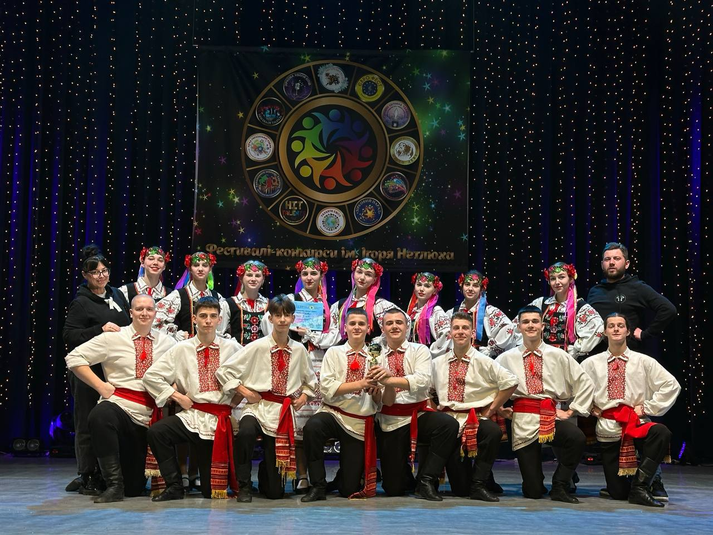
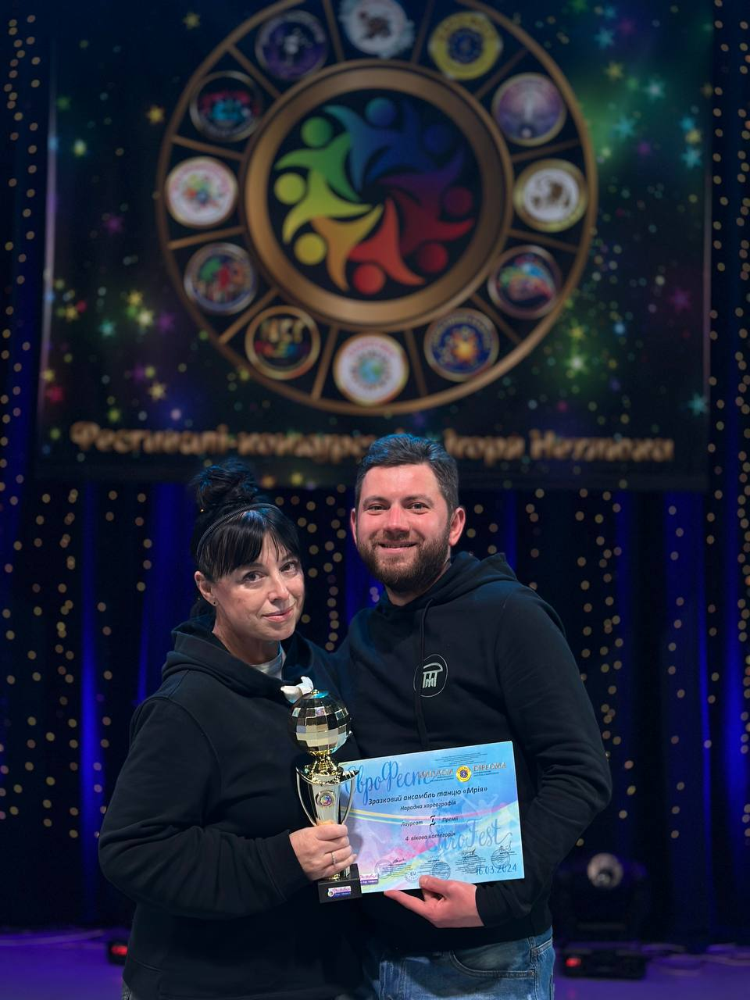
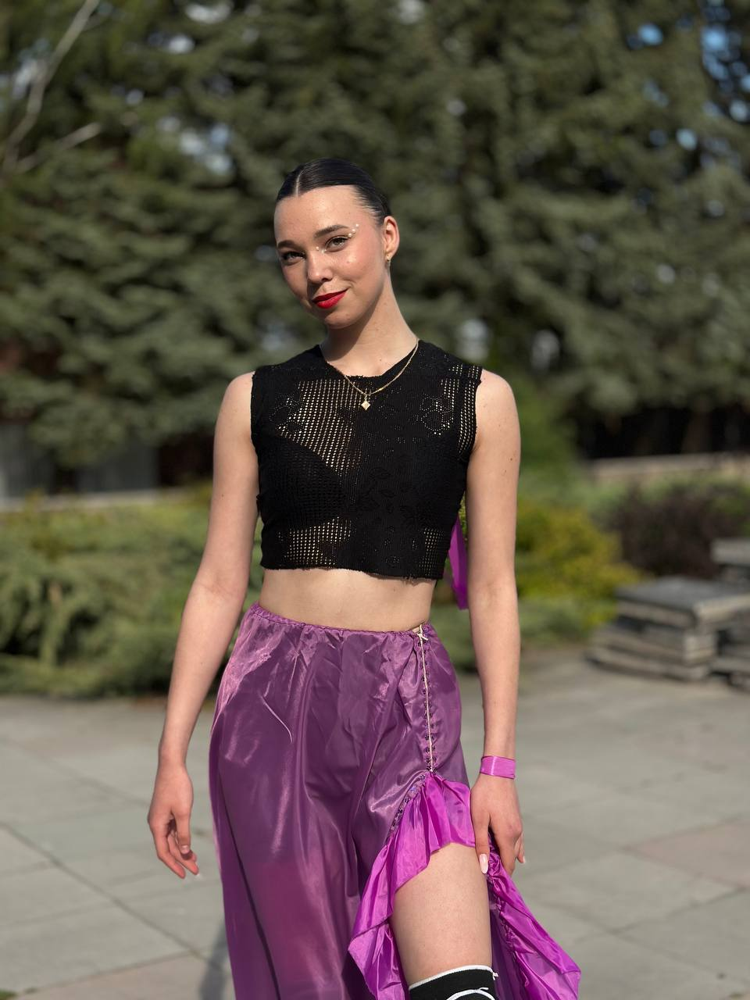
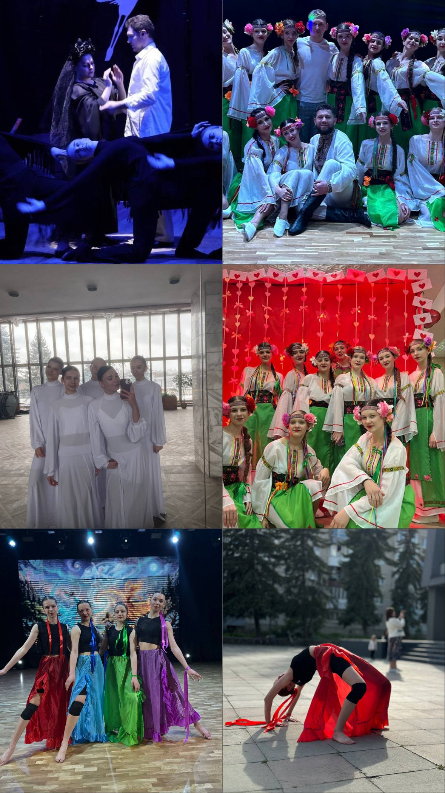
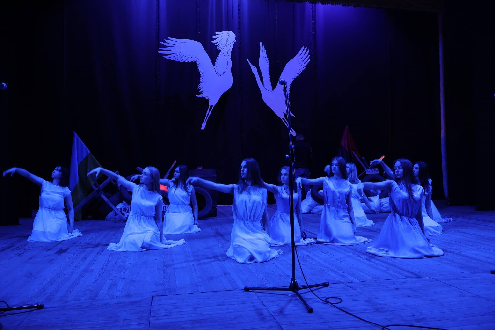
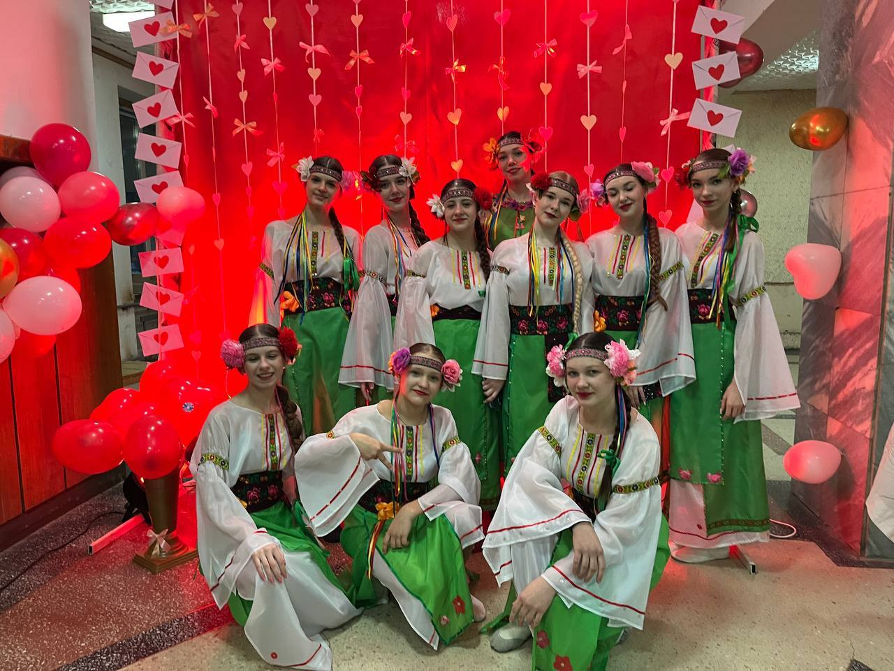
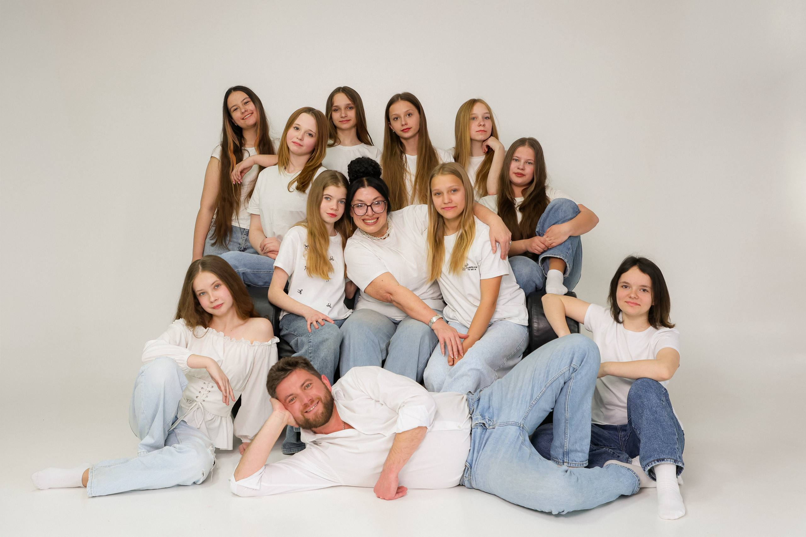
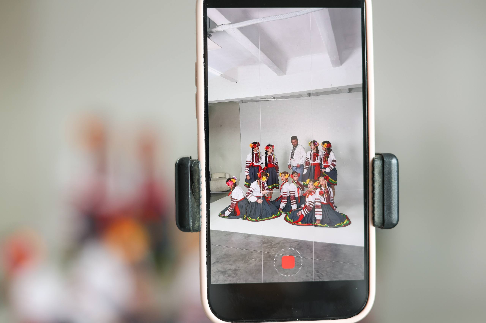
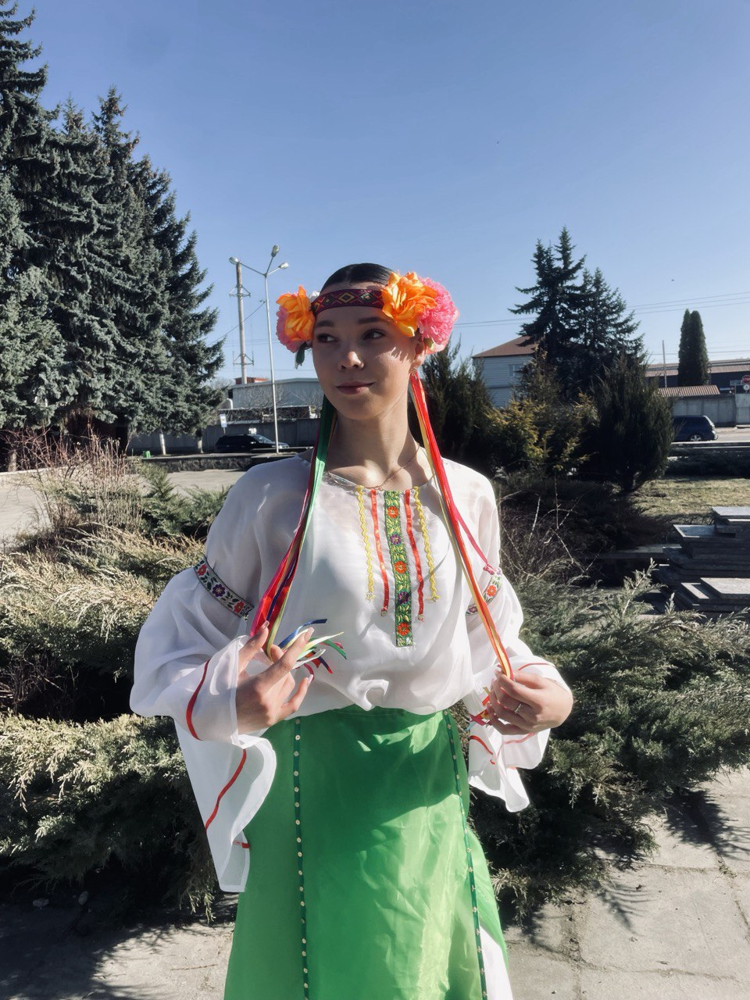
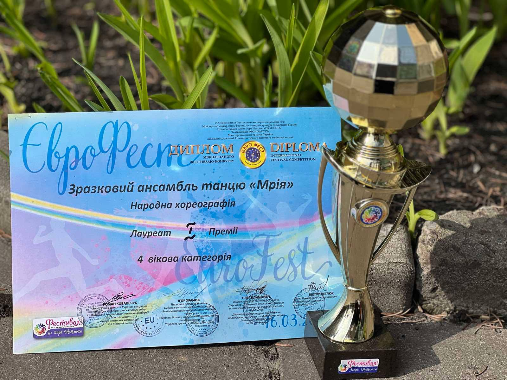

Зразковий хореографічний ансамбль «Мрія» з Ківерців — це дитячо-юнацький танцювальний колектив, який діє при районному будинку культури і відомий своїми виступами на всеукраїнських та міжнародних конкурсах. Колектив представляє місто Ківерці на різних фестивалях і часто займає призові місця. Особливо ансамбль відзначився на міжнародному фестивалі «Мегаполіс» у Києві, де «мрійчата» вибороли почесне друге місце та отримали «Золотий диплом». Керівниками колективу тоді були Тамара Кушнірук та Юрій Сухарєв. У «Мрії» займаються діти та підлітки, а сам ансамбль поєднує сучасну й народну хореографію. Такі колективи не лише навчають танцю, а й допомагають дітям виступати на сцені, розвивати дисципліну, командну роботу та артистичність.
Беремо участь у міських концертах
Всеукраїнські конкурси та фестивалі
Понеділок: 18:00
Середа: 18:00
Субота: 16:00









